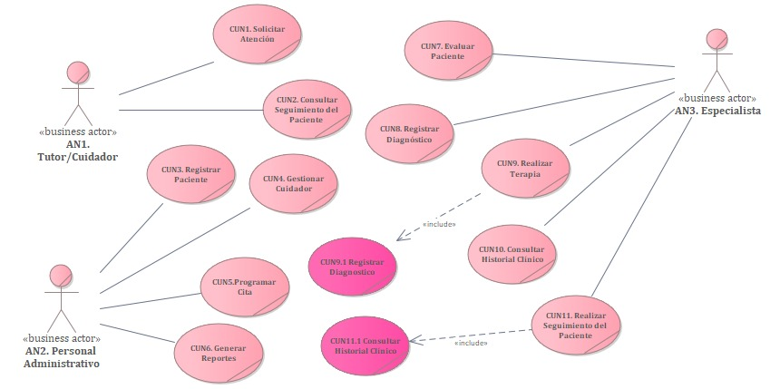
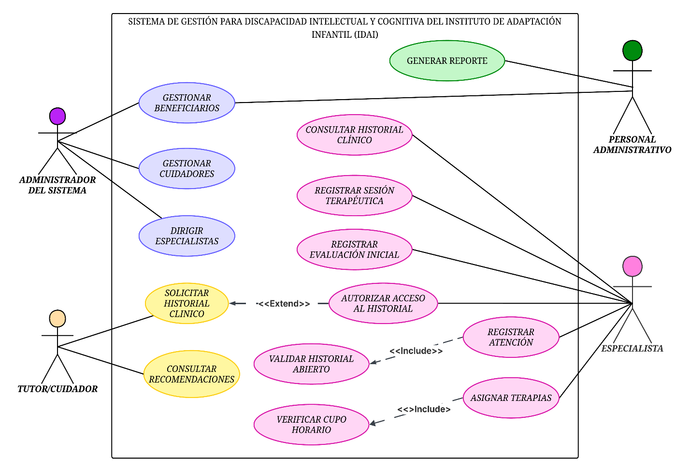
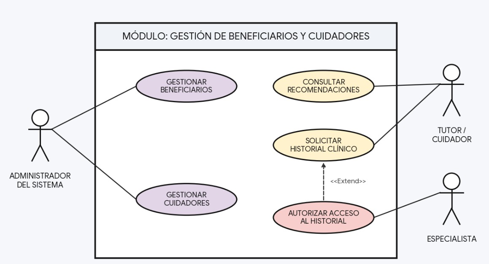
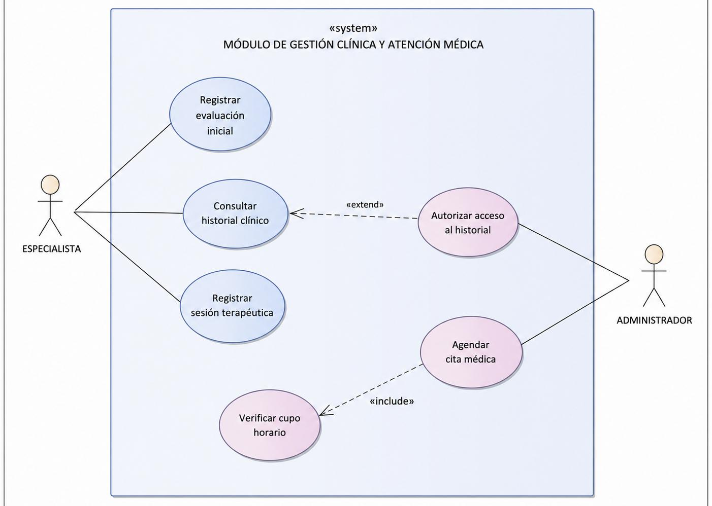
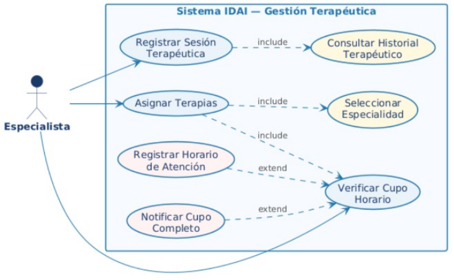
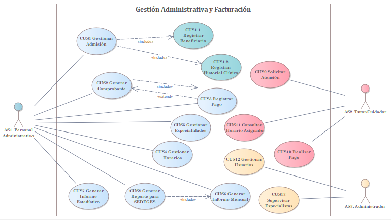
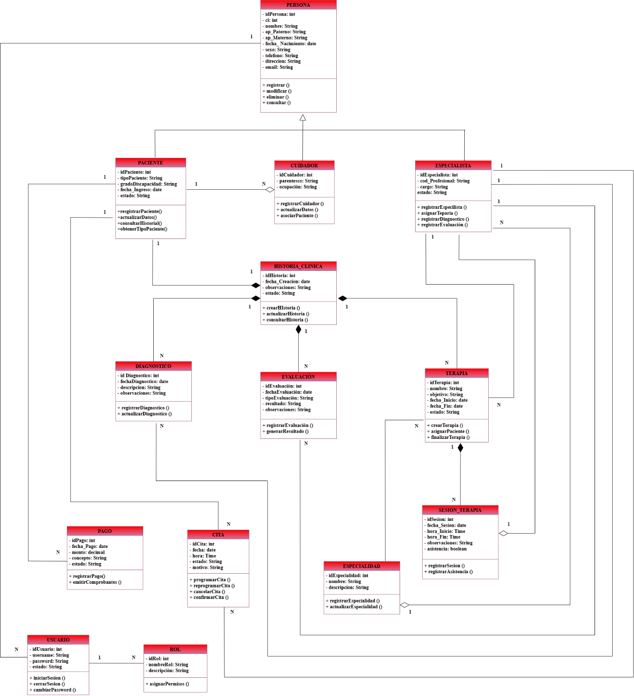
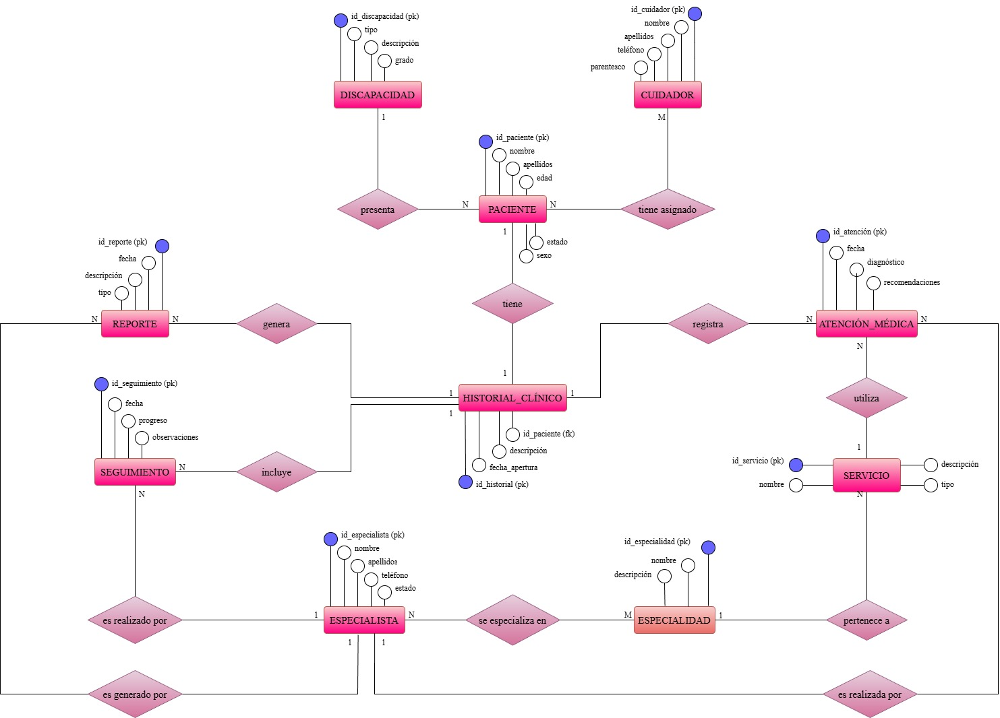

16.1 Requerimientos Funcionales
| Código | Requerimiento | Descripción |
|---|---|---|
| RF01 | Registro de Beneficiarios | El sistema debe registrar datos personales, tipo de paciente (interno/externo) y grado de discapacidad. |
| RF02 | Gestión de Cuidadores | Vincular al beneficiario con un tutor o responsable legal. |
| RF03 | Registro de Evaluaciones | Permitir la creación de una evaluación diagnóstica inicial. |
| RF04 | Historial Clínico y Educativo | Generar y consultar un historial completo por beneficiario. |
| RF05 | Gestión de Especialistas | Registrar al personal del centro (médicos, terapeutas, psicólogos). |
| RF06 | Asignación de Terapias | Permitir que un especialista asigne un plan o programa terapéutico a un beneficiario. |
| RF07 | Control de Sesiones | Registrar la asistencia y el procedimiento realizado en cada sesión de terapia. |
| RF08 | Control de Costos | Registrar el pago de servicios para pacientes externos (ej. 10 Bs por terapia, 60 Bs por evaluación). |
| RF09 | Generación de Informes | Generar reportes mensuales estadísticos con formas de ingreso, diagnósticos y procedimientos realizados. |
16.2 Requerimientos No Funcionales
| Código | Tipo | Descripción |
|---|---|---|
| RNF01 | Seguridad | Solo personal autorizado accede a datos sensibles. |
| RNF02 | Disponibilidad | Sistema disponible 24/7 para consultas. |
| RNF03 | Usabilidad | Interfaz sencilla y accesible para el personal del IDAI. |
| RNF04 | Desempeño | Búsquedas en menos de 2 segundos. |
| RNF05 | Escalabilidad | Soporte para crecer en volumen de datos históricos. |
17. Diagrama de Casos de Uso de Negocio
Representa los procesos de negocio del IDAI desde la perspectiva organizacional, mostrando los actores externos (Tutor, Especialista, Administrador) y los casos de uso de alto nivel que el sistema debe soportar.

18. Diagrama de Casos de Uso
Vista general de todos los casos de uso del sistema agrupados por actor, mostrando las interacciones que cada rol (Personal Administrativo, Especialista, Cuidador) puede realizar en el SIGAP-DIC-IDAI.

18.1 – 18.4 Diagramas por Módulo
El sistema se divide en cuatro módulos funcionales. Cada diagrama detalla los casos de uso específicos del módulo, sus actores y las relaciones de inclusión y extensión entre ellos.
18.1 Módulo I – Gestión de Beneficiarios y Cuidadores
Cubre el registro de nuevos beneficiarios (internos y externos), la vinculación con su tutor o cuidador responsable, la consulta del expediente clínico y la clasificación por tipo de discapacidad.

18.2 Módulo II – Gestión Clínica y Atención Médica
Incluye el registro de diagnósticos, evaluaciones médicas, programación de citas con especialistas y la consulta o actualización del historial clínico de cada beneficiario.

18.3 Módulo III – Gestión Terapéutica
Gestiona la asignación de planes terapéuticos, el registro de sesiones de terapia, el seguimiento de la asistencia y la documentación del progreso terapéutico de cada paciente.

18.4 Módulo IV – Gestión Administrativa y Reportes
Abarca el control de costos y pagos de pacientes externos, la gestión de usuarios y roles del sistema, y la generación de reportes estadísticos y mensuales para uso interno y remisión al SEDEGES.

19. Diagrama de Casos de Uso Expandido
Caso Expandido 1 – Registro de Beneficiarios
| Caso de uso: | Registro de Beneficiarios |
| Actores: | Personal Administrativo |
| Propósito: | Guardar los datos personales, tipo de paciente y grado de discapacidad para inscribir a un nuevo beneficiario en el instituto. |
| Resumen: | El Personal Administrativo ingresará al sistema en el módulo de beneficiarios, procederá a ingresar los datos del nuevo paciente (ya sea interno o externo) y registrará su grado de discapacidad cognitiva. Al finalizar el registro, el sistema emitirá un mensaje de confirmación del proceso y generará el expediente. |
| Tipo: | Primario y real |
| Acción de los actores | Respuesta del sistema |
|---|---|
| 1. Este caso de uso inicia cuando el Personal Administrativo selecciona la opción para registrar un nuevo beneficiario. | 2. El sistema muestra la ventana de registro de beneficiario. |
| 3. El Personal Administrativo ingresa los datos personales, selecciona el tipo de paciente (interno/externo) y el grado de discapacidad cognitiva. | |
| 4. El Personal Administrativo selecciona el botón "Guardar". | 5. El sistema verifica que todos los campos obligatorios estén ingresados correctamente y que estén llenos. |
| 6. El sistema almacena los datos en la base de datos y genera el código único del paciente. | |
| 7. El sistema muestra un cuadro de diálogo con un mensaje indicando que los datos se guardaron correctamente. | |
| 8. El Personal Administrativo se entera de lo sucedido y cierra el cuadro de diálogo que se mostró. | 9. Se limpian los campos de la ventana de registro de beneficiarios. |
Caso Expandido 2 – Control de Sesiones
| Caso de uso: | Control de Sesiones |
| Actores: | Especialista |
| Propósito: | Registrar la asistencia y detallar el procedimiento realizado durante una sesión de terapia específica de un beneficiario. |
| Resumen: | El Especialista ingresará al módulo de terapias asignadas, seleccionará la terapia correspondiente al beneficiario y registrará la fecha, asistencia y los avances o procedimientos de la sesión del día. Al finalizar, el sistema actualizará el progreso terapéutico. |
| Tipo: | Primario y real |
| Acción de los actores | Respuesta del sistema |
|---|---|
| 1. Este caso de uso inicia cuando el Especialista selecciona la opción de control de sesiones de terapia. | 2. El sistema muestra la lista de terapias programadas para el día o la ventana de búsqueda de planes terapéuticos. |
| 3. El Especialista selecciona la terapia del beneficiario que acaba de atender. | 4. El sistema despliega el formulario de registro de sesión. |
| 5. El Especialista marca la asistencia, detalla el procedimiento realizado en la sesión, añade observaciones y presiona "Guardar". | 6. El sistema valida que el campo de detalles del procedimiento no esté vacío. |
| 7. El sistema almacena el reporte de la sesión en la base de datos. | |
| 8. El sistema muestra un cuadro de diálogo con un mensaje indicando que la sesión se guardó correctamente. | |
| 9. El Especialista se entera de lo sucedido y cierra el cuadro de diálogo. | 10. El sistema actualiza el estado de las sesiones completadas en el plan terapéutico. |
Caso Expandido 3 – Control de Costos
| Caso de uso: | Control de Costos |
| Actores: | Personal Administrativo |
| Propósito: | Registrar el pago por los servicios brindados (evaluaciones o terapias) a los pacientes externos. |
| Resumen: | El Personal Administrativo ingresará al módulo de pagos, buscará al paciente externo y seleccionará el servicio a cobrar (ej. 10 Bs por terapia, 60 Bs por evaluación). Procederá a registrar el ingreso del dinero. Al finalizar, el sistema emitirá el comprobante de pago. |
| Tipo: | Primario y real |
| Acción de los actores | Respuesta del sistema |
|---|---|
| 1. Este caso de uso inicia cuando el Personal Administrativo selecciona la opción de cobro de servicios. | 2. El sistema muestra la ventana de pagos y facturación. |
| 3. El Personal Administrativo busca al paciente externo y selecciona el concepto a cobrar (terapia o evaluación). | 4. El sistema carga el monto predeterminado según el tipo de servicio seleccionado. |
| 5. El Personal Administrativo verifica el monto, recibe el dinero físico y presiona el botón "Registrar Pago". | 6. El sistema verifica la transacción. |
| 7. El sistema registra el ingreso económico en la base de datos bajo el código del paciente. | |
| 8. El sistema muestra un mensaje de pago exitoso y habilita la opción de imprimir comprobante. | |
| 9. El Personal Administrativo imprime el comprobante y cierra el mensaje de confirmación. | 10. Se limpian los campos de la ventana de cobro de servicios. |
20. Diagrama de Clases
Modelo orientado a objetos del sistema que muestra las clases principales (Beneficiario, Especialista, Terapia, Sesión, etc.), sus atributos, métodos y las relaciones de asociación, herencia y composición entre ellas.

21. Diagrama Entidad–Relación
Representación de la base de datos relacional del sistema, mostrando las entidades, sus atributos clave y las relaciones entre tablas que permiten gestionar la información clínica, terapéutica y administrativa del IDAI.
